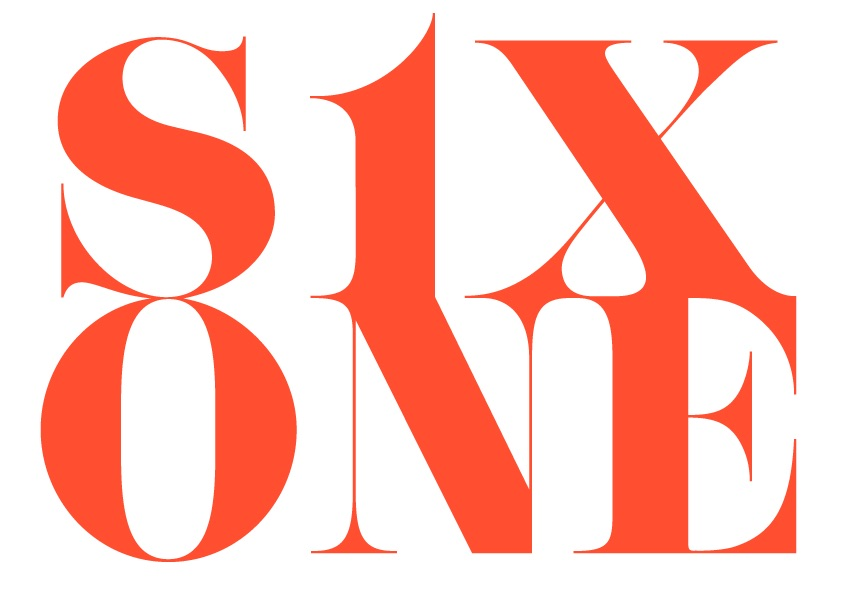
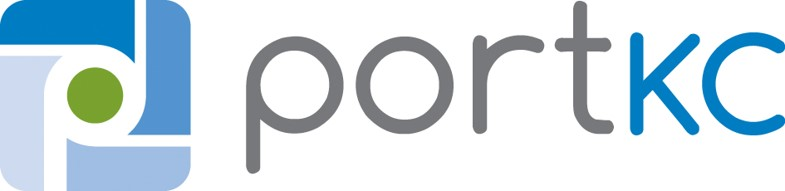
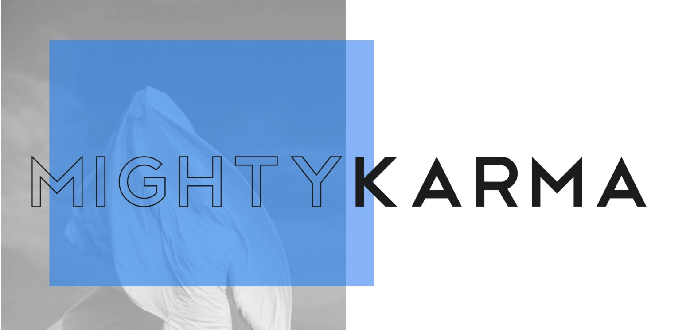
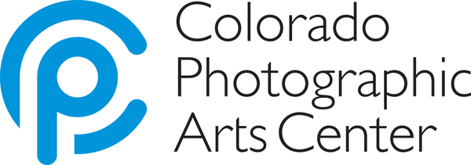
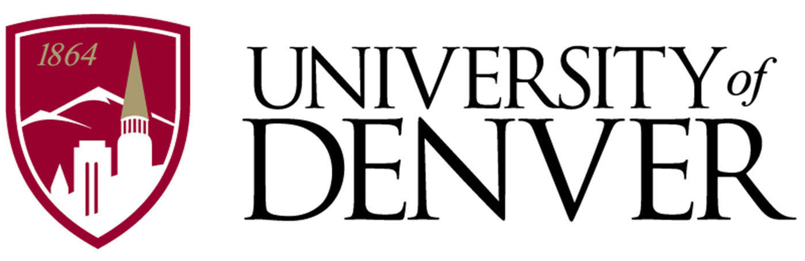
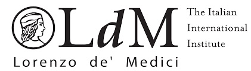

My Professional & Academic Timeline
This interactive timeline highlights my academic journey and internship experiences, showing how my roles in strategic communication, marketing, and public relations have developed over time.
Experience

Six One Agency — Public Relations Intern
September 2025 – Present
Six One Agency is a public relations agency that helps brands tell their stories through strategic communication, media relations, and creative content. As a public relations intern, I support client campaigns through media outreach, research, writing, and content creation. My work includes building media lists, designing proposal decks, coordinating influencer outreach, and creating social media content.

Port KC — Communications Intern
July 2025 – August 2025
Port KC works to create a more globally connected Kansas City through economic development, global commerce, and transportation initiatives. As a communications intern, I supported both internal and external communication efforts, contributing to projects such as the monthly newsletter, website design updates, and press releases.

mightyKARMA — Social Media & Marketing Intern
June 2024 – August 2024
mightyKARMA is an advertising agency based in Denver, Colorado focused on using human experience to communicate brand culture. I worked on creative strategic communications for brands including Intelliskin and Nana’s Dim Sum and Dumplings, while also creating content calendars, social media content, and strategic communication plans.

Colorado Photographic Arts Center (CPAC) — Social Media & Marketing Intern
June 2024 – August 2024
CPAC is a nonprofit that showcases the art of photography. During my internship, I managed social media, designed the monthly newsletter, handled email marketing, and helped keep the website up to date.
Education

University of Denver — Strategic Communications & Marketing Student
September 2022 – Present
The University of Denver has been home to me for the past three years, giving me opportunities to grow both academically and personally. I have taken courses in advertising, marketing, strategic communications, and graphic design, including Foundations of Digital Marketing, Publication and Graphic Design, International Marketing, Producing Video for Social Media, Consumer Behavior, Advertising Creative Strategy, and Global and Multicultural Communication.

Lorenzo de’ Medici — Study Abroad Student
August 2024 – December 2024
During the fall semester of my junior year, I studied abroad at the Italian International Institute, Lorenzo de’ Medici, in Florence, Italy. I traveled to seven different countries, which deepened my appreciation for diverse cultures and strengthened my passion for travel and human connection. My coursework included graphic design and wine business and marketing.